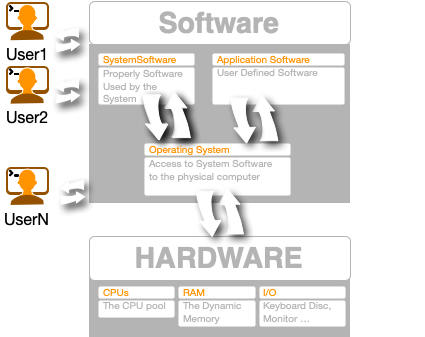

Main Memory
Main memory provides a fast storage that can be accessed directly by the CPU. For a program to be executed, it must in the main memory. An Operating System does the following activities for memory management


Silvestro Di Pietro
21/03/2023
An operating system (OS) is system software that manages computer hardware, software resources, and provides common services for computer programs.

Main memory provides a fast storage that can be accessed directly by the CPU. For a program to be executed, it must in the main memory. An Operating System does the following activities for memory management
A process is program or a fraction of a program that is loaded in main memory. A process needs certain resources including CPU time, Memory, Files, and I/O devices to accomplish its task. The process management component manages the multiple processes running simultaneously on the Operating System.
A program in running state is called a
process.
OS is responsible for the following:
I/O Device Management provides an abstract level of H/W devices and keep the details from applications to ensure proper use of devices, to prevent errors, and to provide users with convenient and efficient programming environment.
A file system is normally organized into directories for easy navigation and usage. These directories may contain files and other directions.
A files is a sequence of bits, bytes, lines or records whose meaning is defined by its creator and user.
file system.Files are organized by the File System in a directory Tree
/bin – binary or executable programs./etc – system configuration files./home – Users home directory. It is the default current
directory./opt – optional or third-party software./tmp – temporary space, typically cleared on
reboot./usr – User related programs./var – log files.Is the process of managing and administering a computer network. A computer network is a collection of various types of computers connected with each other.
Network management is the process of keeping your network healthy for an efficient communication between different computers.
The command interpreter is the primary interface between the user and the rest of the system. Command Interpreter System executes a user command by calling one or more number of underlying system programs or system calls.
Command Interpreter System allows human users to interact with the Operating System and provides convenient programming environment to the users.